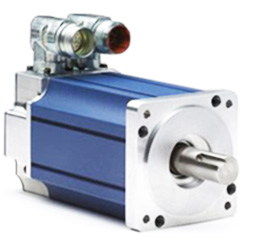
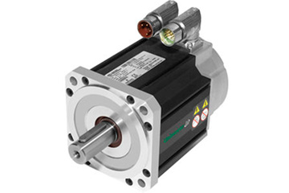
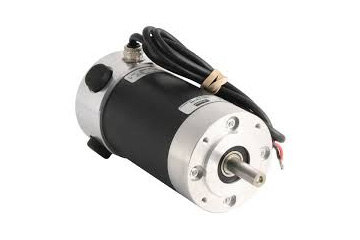
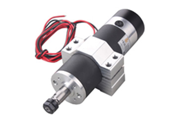

INDUSTRIAL ENGINEERS (INDIA),is Top Leading Re-winding Company in India, we are
having most Testing facility & Equipments for Rewinding , Servicing & Testing of AC/DC Servo motors , Spindle
motor & Stepped motors.
INDUSTRIAL ENGINEERS (INDIA),having the business in allover India, we have a team of around 9 experienced
technicians in Servo technology and Engineering personnel and 7-Semi- Skilled Company is able to cater to
the Re-Windings, Re-pairings & Servicing.

Rewinding and Repairing
INDUSTRIAL ENGINEERS (INDIA), is committed to offer a flawless High quality range of Industrial Level Rewinding,
Repairing & Servicing of AC/DC Servo Motors, Spindle Motors, Stepped Motors with Sales Branded AC, DC & Servo
Motors, Servo Drives, Encoders (Incremental & Absolute), Decoders, Resolvers, Brakes, Custom Built HVAC, PCB’s
& PLCs and Industrial Peripherals to our clients.
SERVO MOTOR is a simple electrical motor, controlled with the help of servomechanism. If the motor as
controlled device, associated with servomechanism is DC motor, then it is commonly known DC Servo Motor. If
the controlled motor is operated by AC, it is called AC Servo Motor.
There are some special types of application of electrical motor where rotation of the motor is required
for just a certain angle not continuously for long period of time. For these applications some special
types of motor are required with some special arrangement which makes the motor to rotate a certain angle
for a given electrical input (feedback).



This is normally a simple DC motor which is controlled for specific angular rotation with help of additional
servomechanism (a typical closed loop feedback control system). Now a day’s servo system has huge industrial
applications.
From this basic working principle of servo motor it can be concluded. The shaft of the servo is connected to
a potentiometer . The circuitry inside the servo, to which the potentiometer is connected, knows the position
of the servo. The current position will be compared with the desired position continuously with the help of an
Error Detection Amplifier. If a mismatch is found, then an error signal is provided at the output of the error
amplifier and the shaft will rotate to go the exact location required. Once the desired location is reached, it
stops and waits.
Servomechanism
A servo system mainly consists of three basic components - a controlled device, a output sensor, a feedback system.
This is an automatic closed loop control system. Here instead of controlling a device by applying variable
input signal, the device is controlled by a feedback signal generated by comparing output signal and reference
input signal. When reference input signal or command signal is applied to the system, it is compared with
output reference signal of the system produced by output sensor, and a third signal produced by feedback system.
This third signal acts as input signal of controlled device. This input signal to the device presents as long as
there is a logical difference between reference input signal and output signal of the system. After the device
achieves its desired output, there will be no longer logical difference between reference input signal and
reference output signal of the system. Then, third signal produced by comparing theses above said signals will
not remain enough to operate the device further and to produce further output of the system until the next
reference input signal or command signal is applied to the system. Hence the primary task of a servomechanism
is to maintain the output of a system at the desired value in the presence of disturbances.